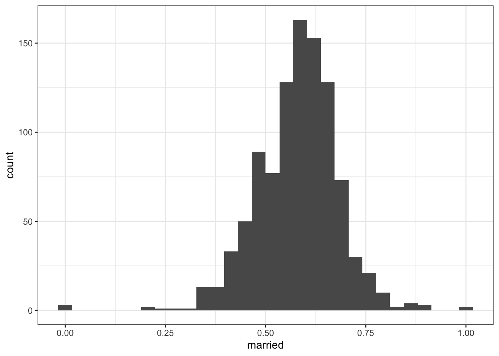

Appendix for comment on Nianogo et al.
Michael D. Garber
2024-01-02
1 Intro
This appendix contains supporting information and code related to my comment on Nianogo et al.’s article.
The R Markdown file that creates this web page is located here: https://github.com/michaeldgarber/gsynth-nianogo-et-al/blob/main/docs/comment-appendix.Rmd
The authors provide their data and code here: https://anonymous.4open.science/r/Medicaid-CVD-Disparities-4CB7/README.md
I’ve done some additional processing to that data in the scripts located in this folder: https://github.com/michaeldgarber/gsynth-nianogo-et-al/tree/main/scripts
They can be run in the following order:
source(here("scripts", "read-wrangle-data-acs.R"))
source(here("scripts", "read-wrangle-data-pres-election.R"))
source(here("scripts", "read-wrangle-data-nianogo-et-al.R"))2 Explore data
2.1 Medicaid expansion and missingness
In this section, I explore Medicaid expansion status by missingness status in the demographic groups.
2.1.1 Medicaid expansion (all states, 2019)
This map shows Medicaid expansion status of states in 2019.
| treated | n |
|---|---|
| 0 | 16 |
| 1 | 34 |
2.1.2 Hispanic population
| treated | n |
|---|---|
| 0 | 7 |
| 1 | 20 |

2.1.3 Black population
| treated | n |
|---|---|
| 0 | 12 |
| 1 | 25 |

2.2 Distribution of BRFSS covariates
In this section, I examine the distribution of some of the BRFSS covariates used in the analysis to see if the BRFSS data may be contributing to the instability of the effect estimates.
2.2.1 Proportion men
2.2.1.1 All adults aged 45-64
Proportion men among all adults aged 45-64 (dataset name: overall)
## Min. 1st Qu. Median Mean 3rd Qu. Max.
## 0.3093 0.3957 0.4166 0.4173 0.4400 0.5317
2.2.1.2 Hispanic adults aged 45-64
Proportion men among Hispanic adults aged 45-64 (dataset name: hispanic_complete)
Observation: some state-years have 0% or 100% men in this group, which is not plausible, highlighting the fact that BRFSS may not be reliable in such stratified sub-groups.
## Min. 1st Qu. Median Mean 3rd Qu. Max.
## 0.0000 0.3693 0.4200 0.4188 0.4651 1.0000
In California, most years seem implausibly low.
2.2.1.3 Black adults aged 45-64
Again, the proportion men among Black adults aged 45-64 seems implausible in some state-years.
## Min. 1st Qu. Median Mean 3rd Qu. Max.
## 0.1579 0.3250 0.3643 0.3761 0.4194 0.7000
2.2.1.4 White adults aged 45-64
## Min. 1st Qu. Median Mean 3rd Qu. Max.
## 0.0000 0.3598 0.4196 0.4198 0.4742 1.0000
2.2.2 Low income
Less than $15,000
2.2.2.1 All adults aged 45-64
## Min. 1st Qu. Median Mean 3rd Qu. Max.
## 0.03898 0.06782 0.08677 0.09121 0.11007 0.193252.2.2.2 Hispanic adults aged 45-64
Again, there are what I would think are some implausible observations (e.g,. 0% or 100% low income in a state-year).
## Min. 1st Qu. Median Mean 3rd Qu. Max.
## 0.0000 0.1143 0.1533 0.1586 0.1968 1.00002.2.2.3 Black adults aged 45-64
## Min. 1st Qu. Median Mean 3rd Qu. Max.
## 0.0000 0.1355 0.1765 0.1784 0.2166 0.5000
2.2.2.4 White adults aged 45-64
## Min. 1st Qu. Median Mean 3rd Qu. Max.
## 0.00000 0.09858 0.14219 0.14602 0.19149 1.000002.2.3 Low education
No high-school degree #### All adults aged 45-64
## Min. 1st Qu. Median Mean 3rd Qu. Max.
## 0.01872 0.04614 0.06653 0.07496 0.09833 0.23663
2.2.3.1 Hispanic adults aged 45-64
## Min. 1st Qu. Median Mean 3rd Qu. Max.
## 0.0000 0.1780 0.2650 0.2611 0.3486 0.5547
2.2.3.2 Black adults aged 45-64
## Min. 1st Qu. Median Mean 3rd Qu. Max.
## 0.00000 0.08062 0.11265 0.11936 0.15205 0.50000
2.2.3.3 White adults aged 45-64
## Min. 1st Qu. Median Mean 3rd Qu. Max.
## 0.0000 0.1250 0.2268 0.2318 0.3333 0.64002.2.4 Married
2.2.4.1 All adults aged 45-64
## Min. 1st Qu. Median Mean 3rd Qu. Max.
## 0.5029 0.5849 0.6104 0.6137 0.6385 0.7633
2.2.4.2 Hispanic adults aged 45-64
## Min. 1st Qu. Median Mean 3rd Qu. Max.
## 0.0000 0.5245 0.5869 0.5759 0.6317 1.00002.2.4.3 Black adults aged 45-64
## Min. 1st Qu. Median Mean 3rd Qu. Max.
## 0.0000 0.3279 0.3735 0.3708 0.4106 0.6111
2.2.4.4 White adults aged 45-64
## Min. 1st Qu. Median Mean 3rd Qu. Max.
## 0.0000 0.5226 0.5890 0.5810 0.6429 1.0000
2.2.5 Political orientation and considering an alternative measure
In Nianogo et al.’s Table 1, they present the measure of political-party affiliation in 2014. The below replicates those values, where 0=Republican, 1=Democrat, and 2=Split.
| party | n | n_total | prop |
|---|---|---|---|
| 0 | 24 | 50 | 0.48 |
| 1 | 13 | 50 | 0.26 |
| 2 | 13 | 50 | 0.26 |
To facilitate interpretation, this variable in 2016 is mapped here:
These values struck me as somewhat odd. For one, it appears a given state-year receives a value of either Republican, Democrat, or split, raising the question of within-state variability in the measure. Second, given the polarization and parity of party politics in the United States, I would expect the values corresponding to Republican (0) and Democrat (1) to be about the same and for both to be nearer to 50%.
A simpler and more stable (in terms of sampling variability) measure for the state’s political environment might be the popular-vote share from presidential elections. Those data are available here:
https://dataverse.harvard.edu/dataset.xhtml?persistentId=doi:10.7910/DVN/42MVDX
In this script, I’ve loaded popular-vote data from presidential elections.
source(here("scripts", "read-wrangle-data-pres-election.R"))In analyses as presented in Scenarios 2-5 in the main text, I applied the vote share from the most recent election if the year wasn’t an election year. For example, 2014 received 2012’s popular-vote data.
3 Use state-year effect estimates from the gsynth function to calculate summary measures of effect
In this section, I use state-year effect estimates to calculate the summary measures of effect in the main text’s table.
This code will populate values for Scenario 5 in the table in which I used for the MC-NNM estimator. Code for the other analyses can be found here: gsynth-nianogo-et-al/scripts/gsynth-analyses-to-post.R
3.1 Load the data
source(here("scripts", "read-wrangle-data-acs.R"))
source(here("scripts", "read-wrangle-data-pres-election.R"))
source(here("scripts", "read-wrangle-data-nianogo-et-al.R"))3.2 Run the gsynth function
Here, I will summarize effects estimated by the MC-NNM estimator as presented in Scenario 5 of the table in the text.
Also see https://yiqingxu.org/packages/gsynth/articles/tutorial.html#matrix-completion
gsynth_out_overall_sub_pol_mc_nnm=gsynth(
#outcome ~ treatment indicator+ covariates
cvd_death_rate ~ treatedpost +
primarycare_rate +
cardio_rate +
population_overall +
low_educ_overall +
married_overall+
employed_for_wages_overall +
vote_share_dem+#popular vote data
low_income_overall +
male_overall +
race_nonwhite_overall
,
#dataset in which the effects are estimated
data = overall_covars_alt,
estimator = "mc", #the MC-NNM estimator
# EM = F, #
index = c("state_id","year"), #time-unit
#non-parametric bootstrap if MC-NNM estimator used
#inference = "parametric",
se = TRUE,
#perform a cross-validation procedure to
#determine the number of unobserved factors
CV = TRUE,
#the range of possible numbers of unobserved factors
r = c(0, 5), #
seed = 123, #arbitrary seed so same results every time
nboots = 2000, #number of bootstrap reps
force = "two-way",
parallel = TRUE
)3.3 Examine summary output returned by the gsynth function
3.3.1 Average treatment effect with confidence intervals
Return the average (unweighted) difference effect over all treated state-years and the corresponding standard error and confidence intervals.
gsynth_out_overall_sub_pol_mc_nnm$est.avg## Estimate S.E. CI.lower CI.upper p.value
## ATT.avg -2.118079 2.163304 -6.358078 2.121919 0.3275332These confidence intervals are calculated by adding 1.96SE and -1.96SE to either side of the estimate.
#qnorm(.975)#return the exact value
#Estimate
gsynth_out_overall_sub_pol_mc_nnm$est.avg[1]## [1] -2.118079#Upper limit
gsynth_out_overall_sub_pol_mc_nnm$est.avg[1]+
gsynth_out_overall_sub_pol_mc_nnm$est.avg[2]*1.959964## [1] 2.121919#Lower limit
gsynth_out_overall_sub_pol_mc_nnm$est.avg[1]-
gsynth_out_overall_sub_pol_mc_nnm$est.avg[2]*1.959964## [1] -6.3580783.3.2 Average treatment effect - point estimate only
Another way to return the point estimate for the average treatment effect (without the confidence intervals) is by gsynth_object$att.avg.
gsynth_out_overall_sub_pol_mc_nnm$att.avg## [1] -2.1180793.3.3 Average treatment effect at each time point
gsynth_out_overall_sub_pol_mc_nnm$att## -13 -12 -11 -10 -9 -8
## -0.26992263 0.38732901 0.26348340 -0.79655792 -1.01552488 0.23192784
## -7 -6 -5 -4 -3 -2
## 0.08756312 0.14899219 0.23311709 -0.07675195 -0.03369085 0.30835163
## -1 0 1 2 3 4
## 0.40214995 0.14395025 -3.94572630 -4.90217808 -0.48894728 -1.83082518
## 5 6
## -1.53387942 0.562690213.4 Summarize effect estimates for every treated state-year to calculate the unweighted average
The average treatment effect at each time point can be returned by gsynth_object$att. These effect estimates are summarized over units where time is scaled to the treatment period for that unit. That is, 1 corresponds to the first treated year for each treated state, regardless of the calendar year.
3.4.1 Return effect estimates for every treated state-year
Using the effect estimates for every treated state-year, we can replicate the summary difference effects presented above. Effect estimates for every treated state-year are returned by gsynth_objecct$eff.
Here are the difference effects for all state-years. Note that “effects” are estimated for all state-years in the treated states, including pre-treatment years. Pre-treatment effects are the difference between the observed and predicted counterfactual outcomes before treatment.
gsynth_out_overall_sub_pol_mc_nnm$eff## 2 4 5 6 8 9
## 2000 -2.8549609 0.9254919 -6.56021258 -6.3914770 -2.9607249 5.01758412
## 2001 5.8785560 -2.8025061 -3.46542138 -9.7262748 -10.6700147 1.56284433
## 2002 -0.3513856 3.3130764 5.35241334 -4.2376838 3.4085189 3.31272662
## 2003 -0.3155085 -3.1909703 -9.84283260 2.9835159 -1.1003219 -1.01984959
## 2004 0.5178832 1.2243677 -2.37844455 0.3360901 0.1558620 -0.15402197
## 2005 -5.3910471 2.8557760 0.05381347 0.1484376 -0.5027154 -2.92327032
## 2006 -9.3061276 3.6482257 5.60159505 6.3278789 0.8159762 -4.80527797
## 2007 -13.9966886 2.6698943 -0.12056547 5.3221665 1.3100673 -1.99285818
## 2008 -8.0616089 -3.8467589 5.45840980 -0.2389340 1.7882295 -0.05959601
## 2009 2.2731099 -3.1360315 -4.39773648 1.2113080 5.3525481 0.83235292
## 2010 9.6699464 -4.9302006 1.99157065 1.4377013 -0.4254949 0.93916143
## 2011 4.1806033 1.5230066 6.41778331 0.6398288 3.8678738 -1.52598728
## 2012 6.6324375 2.0246665 5.80748351 4.5018306 3.5084971 5.70294337
## 2013 1.1994690 -0.4073624 -2.26575154 -1.2320234 -2.7471547 -4.53157237
## 2014 12.4764326 -10.2414970 16.40508485 -8.8986156 -0.3509733 -13.46949116
## 2015 11.7806796 -5.9121541 4.40407449 -10.7073366 -2.7536341 -15.30211467
## 2016 10.6629440 2.5407575 14.36990400 -0.6185028 5.6350307 -15.82618933
## 2017 2.7299284 -4.5502136 20.27686278 -3.7604160 -3.9764594 -14.49889136
## 2018 11.5267968 -5.8068421 13.01575069 -4.0113799 -8.7816937 -9.97251318
## 2019 14.0531558 -5.9749003 28.88296298 -4.6492172 -0.4304725 -11.75555220
## 10 15 17 18 19 20
## 2000 -1.81602305 8.0833229 1.9257576 2.3235016 0.1176644 -5.555199395
## 2001 2.13907177 -5.0601838 3.6297837 -2.6650165 -4.8037043 2.217920042
## 2002 -4.35112520 4.3777023 2.1085935 -3.9036759 -7.6005317 -0.915802086
## 2003 -7.92495992 -3.9467320 0.1489462 0.6781281 2.6342882 -0.006407251
## 2004 2.01941293 -0.6863185 0.2391470 4.0858052 -3.3363742 5.469241138
## 2005 -0.45835661 1.6764130 0.6290714 -2.2168794 -1.1991227 3.413243076
## 2006 4.73311789 -0.9313507 -4.2223637 -0.4899900 2.9689752 -0.978106611
## 2007 4.08137468 -9.6010019 -1.3708982 -1.2385030 -1.1254830 -3.807699360
## 2008 8.67188119 2.5259067 3.4691970 0.5785341 -2.2654531 -1.413289722
## 2009 3.44429572 1.4708106 -0.4549505 -2.8616421 1.2561041 -2.850611758
## 2010 0.07237734 -4.9620191 -0.1246502 2.3606650 5.7387897 0.746911783
## 2011 -12.91829889 1.4193114 -0.1147696 1.4696709 1.1421687 1.697238737
## 2012 -6.88068309 1.8411968 -4.1509112 4.8162724 2.7783652 4.608116170
## 2013 7.89468907 4.2960914 -2.5491895 0.7139686 4.6177348 -1.502840268
## 2014 -22.89346887 19.0004806 -11.6410006 -3.3863784 -10.4195965 5.991426220
## 2015 -22.89838332 9.4663920 -14.7722243 -8.2851715 -15.3251365 7.786098766
## 2016 -16.42311988 -12.5374204 -11.3011604 2.3463428 1.2881646 9.341081057
## 2017 -11.29206388 8.4828745 -16.6572568 -2.0741844 -0.6877451 5.604985932
## 2018 -21.13442854 4.5800173 -9.1374801 0.3032116 0.9905305 9.965214467
## 2019 -23.44436702 5.6359251 -13.4046862 1.3658028 19.8335289 6.429658030
## 21 22 23 24 25 26
## 2000 -4.6294111 -1.7437083 0.07570525 2.7204380 -0.6990843 -0.0161745
## 2001 6.4119219 2.6067579 6.69923992 0.6281304 -0.4088048 -3.3504597
## 2002 -5.0860523 -6.1868444 -6.02419187 -2.9893821 2.9089778 -2.5980492
## 2003 0.5004803 3.6138866 -1.15556061 -1.6482439 6.5289678 1.5007905
## 2004 -1.9404038 -1.1781295 -5.84272521 4.6644422 4.4017002 -2.8865029
## 2005 0.5737142 2.4002428 3.15175303 0.2256716 -3.3073082 4.1748908
## 2006 -0.2055802 2.2460686 9.59173002 0.1218915 -2.1117501 -2.9027444
## 2007 -4.0766510 0.9936110 3.68216281 1.3875399 2.9845796 3.3115265
## 2008 -3.2261717 8.1203126 -0.75057774 -3.0707603 -1.3134053 0.6602714
## 2009 -0.8405247 -0.0926782 -10.05108079 4.9282587 0.4090805 -1.0117059
## 2010 1.3752575 -3.4818804 -5.42439483 2.9718065 -2.5460516 -0.6252006
## 2011 2.3199656 -12.9166318 5.97492694 -4.9875114 -1.4695736 5.0311348
## 2012 8.8105395 0.5373354 -0.36686424 -3.5569524 -1.1951496 -0.6589605
## 2013 1.6694429 1.7842381 -3.20559413 -2.3161417 -4.0163692 -0.8177121
## 2014 6.8212288 6.7992718 -1.26734251 -12.1052757 -10.2694142 -3.7923500
## 2015 12.7207553 -3.9471131 8.21634494 -7.1830097 -12.1394040 -9.1702556
## 2016 23.5383831 3.6295946 1.36876148 -5.0372080 -10.0868757 3.8551289
## 2017 15.5653180 6.7371183 -1.84861304 -10.3177240 -11.1426868 -6.6989052
## 2018 16.1854734 -4.3213319 -3.00867593 -5.0233898 -12.5516589 -7.1359537
## 2019 19.4853982 -2.7256552 -6.19037815 -8.6562222 -10.0813651 -13.5660754
## 27 30 32 33 34 35
## 2000 -4.0048696 -1.3426304 -4.65485271 1.297806 3.49322602 -8.7826231
## 2001 -0.1704084 -1.0810075 2.14520702 4.990289 1.89685211 -1.1569962
## 2002 -2.0120038 4.5521697 -4.44486600 6.015901 1.83996172 3.6758075
## 2003 -4.9673122 6.4480646 -1.11728952 -10.111013 0.70623219 -5.3882315
## 2004 0.1339679 -10.5633307 1.44698982 -5.876708 -1.34815685 -6.9289465
## 2005 2.9537924 -4.9570906 14.73236650 -4.786283 2.87606329 2.2905988
## 2006 -1.6440201 -6.6824458 7.34860789 6.833601 -0.05237921 -3.2057401
## 2007 1.0162709 7.9289953 -8.30998500 4.348816 -3.12345705 3.5031667
## 2008 0.4591471 1.6399859 -5.22629959 -4.437997 -1.47227800 0.7100342
## 2009 1.8882641 1.3506144 7.05149787 3.132310 -12.37021673 6.4353284
## 2010 0.1269997 1.1665361 -4.22738418 -6.564625 6.54540853 4.3688844
## 2011 1.7030661 2.4417498 -0.99729630 -1.901203 1.24024958 4.3837180
## 2012 4.4449333 -0.2856542 -4.29067883 1.298751 1.08499560 -5.0201027
## 2013 1.0497289 2.2230876 -0.07108479 5.590018 -1.33348534 6.6105782
## 2014 -4.1888925 -5.1417667 -8.98697513 -11.272948 -7.67655067 3.1359613
## 2015 -8.0823884 2.2432412 -2.12211379 -10.839888 -12.53180244 -5.7178546
## 2016 -2.6465417 -4.0264410 0.90474778 4.272769 -8.07086934 21.6165209
## 2017 0.9229848 -3.4163772 -12.80839412 1.648234 -7.25530872 7.0654661
## 2018 -0.5146687 14.1233195 -15.25640221 10.693277 -6.43962457 6.6653689
## 2019 -2.9910751 9.3273563 -7.47229206 6.713150 -9.11903698 23.2141307
## 36 38 39 41 42 44
## 2000 1.4980350 -0.7849287 2.72070183 -2.74410407 4.7260493 -8.7893744
## 2001 2.2277692 8.5343622 2.15891822 0.19279412 -0.2558283 0.3017889
## 2002 3.3868805 3.7200846 0.16329797 3.17342622 0.2748056 10.1671798
## 2003 -1.8994282 -0.9878865 -5.94840869 3.99131946 0.5119358 1.4843829
## 2004 -0.4386471 -2.9003550 1.14380012 -0.64099565 -1.2416699 5.9246401
## 2005 -4.0692782 -13.8914755 0.09257012 -1.01699490 3.0248903 12.5212797
## 2006 1.3508449 2.6358211 0.10715142 0.04729964 -0.2894381 -12.6922983
## 2007 1.7391272 -1.1568271 -0.47011710 4.96863701 1.4617728 0.9401307
## 2008 3.1639697 1.8887027 5.11960520 -1.10792700 1.3787021 2.6453143
## 2009 2.7955844 5.2327818 -11.23860745 2.46069932 1.5827381 -1.1426075
## 2010 0.9548831 1.2728407 2.39731545 -6.91189540 0.4103455 -9.1348055
## 2011 -2.8668582 -9.2538635 -1.12805468 -2.02654500 3.7307358 1.7752254
## 2012 -2.1615826 4.3282893 2.08242672 -0.31258942 -5.8830510 -3.3541590
## 2013 -6.7585549 1.8432708 2.26863503 -0.39629928 -2.9168291 0.7092182
## 2014 -11.7479432 11.0310816 -3.72879683 -8.85201412 -7.9378003 -8.1255893
## 2015 -15.8285250 1.5682665 -5.34896552 -6.75804086 -8.7787923 -13.1770728
## 2016 -8.9845593 -6.9688493 1.43973387 -7.60298008 -5.1766789 -24.4935331
## 2017 -14.9863614 -3.6408701 1.40894744 -3.58769597 -6.9289439 -15.4903265
## 2018 -13.5788328 -10.1648103 2.92951948 -11.07381110 -4.5559510 -6.9201632
## 2019 -13.1826499 9.3520661 3.44603107 -8.14339630 -5.8061284 -12.2986461
## 50 51 53 54
## 2000 9.3334980 3.52262819 -2.51466703 7.082314
## 2001 -7.5470297 3.76949417 0.68184390 7.907938
## 2002 -6.5770902 0.16162444 -1.02277580 1.651880
## 2003 -1.9011750 -3.77901751 4.39397664 4.535699
## 2004 -5.1006728 5.14870161 2.07462053 -13.245792
## 2005 -5.2770927 3.03572786 -0.67048990 3.057515
## 2006 0.6724051 -0.96986954 -4.55335693 -2.637055
## 2007 -0.2832529 -0.59788780 2.21108611 5.607797
## 2008 5.8980325 4.45490136 4.17312190 -4.072115
## 2009 0.3522267 3.17070597 -2.44856779 -6.761062
## 2010 4.8594316 0.30006093 1.47493946 -7.671514
## 2011 6.8838652 -1.25602873 -2.04069510 2.261032
## 2012 -7.2772523 0.31565145 -1.85751154 3.007931
## 2013 5.3846361 -2.42812390 0.02122725 -2.535492
## 2014 2.0799530 -4.90912715 -3.90396235 -10.993697
## 2015 11.1466987 -8.14496292 -9.25678926 -9.288240
## 2016 25.5202676 -1.53260149 -4.13516149 1.235381
## 2017 12.7525180 -0.24683486 -3.50708670 -1.331951
## 2018 15.5950791 -0.01963506 -3.36883864 14.623048
## 2019 25.5960077 -3.19034963 -3.27040641 15.0441383.4.2 Wrangle state-year effect estimates in easier-to-read form
Do some data wrangling to the effect estimates to summarize them.
Notes on my naming conventions for the object: * tib - for tibble * diff_eff_by_state_year - difference effects by state-year * mc_nnm - to indicate which gsynth model
Also note that these results are among the total population, not in a demographic subgroup.
tib_diff_eff_by_state_year_mc_nnm=gsynth_out_overall_sub_pol_mc_nnm$eff %>%
as_tibble() %>% #Convert to tibble
mutate(year=row_number()+1999) %>% #Add 1999 to row number to calculate year
dplyr::select(year,everything()) %>%
pivot_longer(cols=-year) %>% #make the dataset long-form
#Rename some of the columns
rename(
state_id = name,
diff_pt = value #estimated difference effect
) %>%
mutate(state_id=as.numeric(state_id)) #make sure state_id is numeric
tib_diff_eff_by_state_year_mc_nnm## # A tibble: 680 × 3
## year state_id diff_pt
## <dbl> <dbl> <dbl>
## 1 2000 2 -2.85
## 2 2000 4 0.925
## 3 2000 5 -6.56
## 4 2000 6 -6.39
## 5 2000 8 -2.96
## 6 2000 9 5.02
## 7 2000 10 -1.82
## 8 2000 15 8.08
## 9 2000 17 1.93
## 10 2000 18 2.32
## # ℹ 670 more rowsBefore we summarize these difference effect estimates, we can link in the treatment indicator so that we know whether the difference effects are during the post-treatment period. The treatment indicator is obtained by calling gsynth_object$D.tr.
(The letter D is conventionally used in the econometrics literature to denote the treatment status.)
diff_eff_by_state_year_mc_nnm
tib_treatedpost =gsynth_out_overall_sub_pol_mc_nnm$D.tr %>%
as_tibble() %>%
mutate(year=row_number()+1999) %>%
dplyr::select(year,everything()) %>%
pivot_longer(cols=-year) %>%
rename(
state_id = name,
treatedpost = value) %>%
mutate(state_id=as.numeric(state_id))
tib_treatedpost## # A tibble: 680 × 3
## year state_id treatedpost
## <dbl> <dbl> <dbl>
## 1 2000 2 0
## 2 2000 4 0
## 3 2000 5 0
## 4 2000 6 0
## 5 2000 8 0
## 6 2000 9 0
## 7 2000 10 0
## 8 2000 15 0
## 9 2000 17 0
## 10 2000 18 0
## # ℹ 670 more rows3.4.3 Calculate unweighted average difference effect
Now we can link those two together to summarize the difference effects over the post-treatment period (which varies by state). It should match the average treatment effect obtained above.
diff_pt_avg_mc_nnm=tib_diff_eff_by_state_year_mc_nnm %>%
#Link the treatment indicator to the difference effects by state-year
left_join(tib_treatedpost,by=c("state_id","year")) %>%
group_by(treatedpost) %>%
#take the simple mean by treatment indicator
summarise(
diff_pt_avg=mean(diff_pt,na.rm=T)
)
diff_pt_avg_mc_nnm## # A tibble: 2 × 2
## treatedpost diff_pt_avg
## <dbl> <dbl>
## 1 0 0.0116
## 2 1 -2.12The average difference effect post-treatment indeed matches the value returned by gsynth_object$att.avg, which demonstrates that the average treatment effect returned by the gsynth’s default output is the unweighted average over treated state-years.
gsynth_out_overall_sub_pol_mc_nnm$att.avg## [1] -2.118079